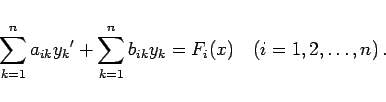
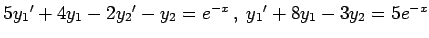
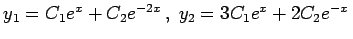
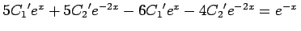
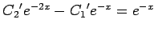
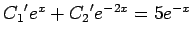
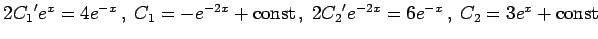
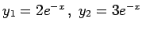
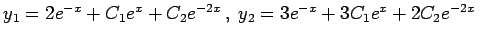

Inhalt Index DeskTop Bronstein

 Differentialgleichungen Gewöhnliche Differentialgleichungen Differentialgleichungen höherer Ordnung und Systeme von Differentialgleichungen Systeme linearer Differentialgleichungen mit konstanten Koeffizienten
Differentialgleichungen Gewöhnliche Differentialgleichungen Differentialgleichungen höherer Ordnung und Systeme von Differentialgleichungen Systeme linearer Differentialgleichungen mit konstanten Koeffizienten


Inhomogene Systeme linearer Differerentialgleichungen 1. Ordnung haben die allgemeine Form
|  | (9.47) |
| Beispiel |
|
Für das System aus zwei inhomogenen Differentialgleichungen  lautet die allgemeine Lösung des homogenen Systems . Einsetzen in die gegebenen Gleichungen und Auffassen von C1 und C2 als Funktionen von x ergibt , C1'ex+C2'e-2x=5e-x oder , . Daraus folgt . Da eine partikuläre Lösung gesucht ist, werden alle Konstanten gleich Null gesetzt, was auf  führt. Die allgemeine Lösung lautet somit . |